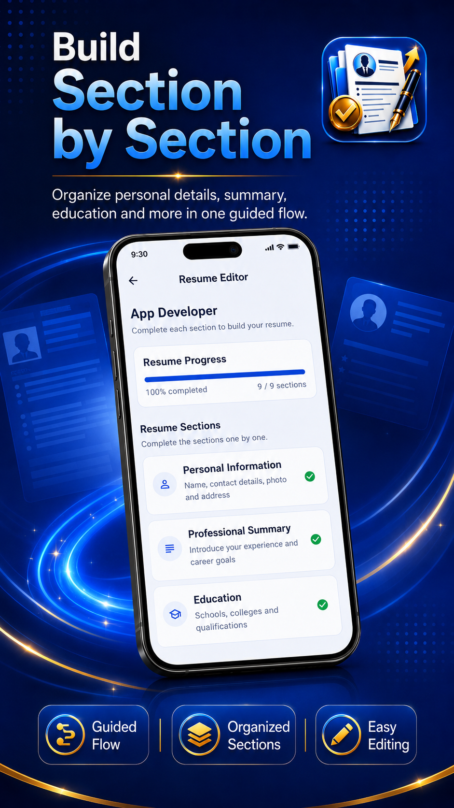
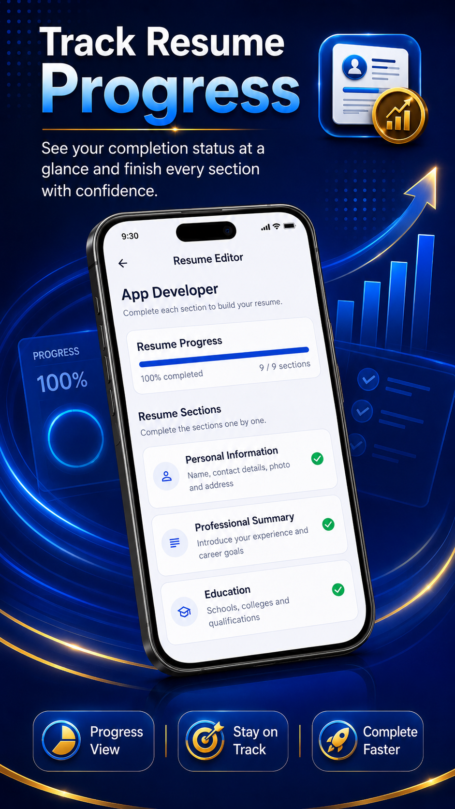
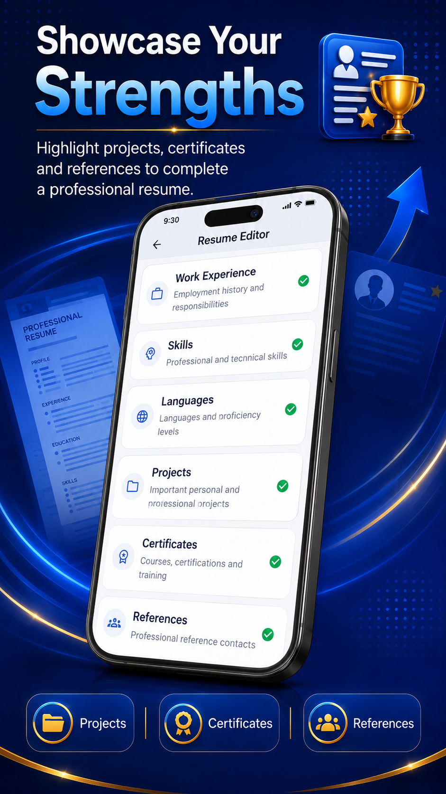
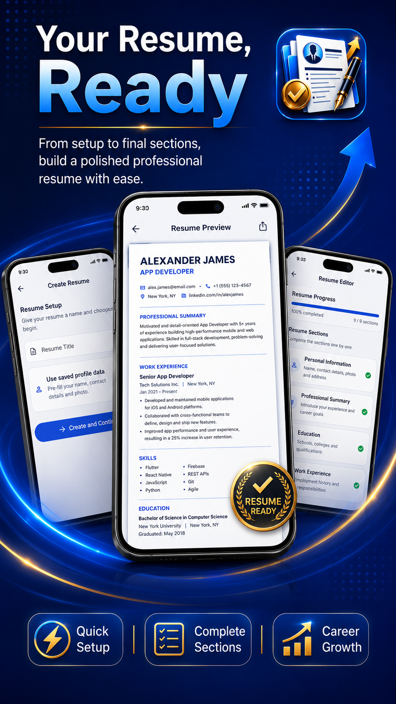

01
Guided Resume Creation
Complete resume sections through a structured, step-by-step creation flow.
Create professional resumes with guided sections, reusable templates, local saving and high-quality PDF export.
ResumeGo – CV & Resume Maker is currently available through Google Play Closed Testing.




ResumeGo – CV & Resume Maker helps users organize professional information into a clear resume without starting from a blank document.
Users can enter personal information, career objectives, education, work experience, skills, languages, projects, certificates, awards, references, interests and custom sections.
Saved resumes can be reopened, edited, duplicated, renamed and exported using professional PDF templates.
Complete resume sections through a structured, step-by-step creation flow.
Choose from ATS-friendly, modern and professional resume layouts.
Generate professional PDF documents for saving, sharing and printing.
View, reopen, rename, duplicate and remove locally saved resumes.
Resume and profile information is stored locally on the user's device.
Include only the resume sections relevant to the user's career and experience.
ResumeGo – CV & Resume Maker is designed around local resume and profile storage. Online services are used only for specific features described in the Privacy Policy.
Read the ResumeGo – CV & Resume Maker Privacy PolicyResumeGo – CV & Resume Maker is currently available in production on Google Play.
No. Users can create and manage resumes without creating an account.
Resume and profile information is stored locally on the Android device.
Yes. Saved resumes can be reopened and updated through the My Resumes section.
Yes. ResumeGo – CV & Resume Maker supports PDF generation, sharing and printing through compatible Android services.
Legal pages, Firebase configuration, advertising setup and Google Play release requirements are currently being completed.